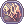
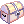

Limes the Milliner
About Limes

Limes the Milliner is another adorable cat girl that everyone knows and loves.
Unlike her sister Miles, the far more sporty and combative Limes has worn her hair short ever since she was little, for it proved to be nothing but an inconvenience in playfights, and later, battle. She has however opted to continue wearing the easily recognizable cat-themed apron in order to upkeep it as a family tradition. As a Milliner, her expertise too is focused on hats but as the family tomboy at heart, all of her devotion has gone towards hats related to Battlegrounds and WoE.
Contrary to what her name may have led you to believe, Limes is not at all a fan of citrus fruits and habitually avoids drinking even the sweetest lemonade.
You can find her on Third Floor of the Main Office also known as the Style Boutique. She's also present at @go woe.
Below is the list of services she provides in-game.
Aura Manipulation
By being a highlight of the Monthly PVP Tournament, players of the best teams can obtain a  Glorious Aura to show off their PVP prowess.
Glorious Aura to show off their PVP prowess.
Limes can make you not only intimidating to your opponents, but fashionable as well, of course. What more could you ask for?
Aura Conversion
Aura Essences are awarded for those who were not-so-lucky and missed the 1st position on the Tournament.
Limes possess the ability to combine 3 Aura Essences into a Glorious Aura, and vice versa.
To summarize:
3x Aura Essences = 1x Glorious Aura OR 1x Glorious Aura = 3x Aura Essences
Unlocking Aura Colors
To unlock her most requested service, one has to first impress Limes by being a Monthly PVP Tournament winner.
Once you've proved you are worthy enough, Limes can 'unlock' various colors for your Glorious Aura.
For each color, she will need 3 Aura Essences, but once unlocked, you may freely change your aura into that color, at no additional cost.

Awaken a Hat
You can awaken a hat at the cost of 2,500  Siege Tokens.
By awakening these hats, you'll be able to switch back and forth between their two distinct forms.
Cards and refines are NOT removed by this process.
| Base Hat | Awakened Result |
|---|---|
 Cat Ear Beret [1] Cat Ear Beret [1]
A cute beret with cat ears! Cats don't normally wear hats but if they did they would wear this one. ATK + 5%
|
Def. Cat Ear Beret [1]
A cute beret with cat ears! Cats don't normally wear hats but if they did they would wear this one. ATK + 4
|
 Red Pom Band [1] Red Pom Band [1]
A lovely red hat with a white pom pom. MDEF + 4, MATK + 5%.
|
 Def. Red Pom Band [1] Def. Red Pom Band [1]
A lovely red hat with a white pom pom. MATK + 4
|
 Black Feather Beret [1] Black Feather Beret [1]
A noble High quality hat made of luxury black cloth. A feather makes it more gorgeous.
|
Warlord's Beret A fierce beret made for the leader of an army.
|
Note - Black Feather Beret [1] loses its slot when awoken. This means that you must decard it before awakening it. Refines however will not be affected.
Recoloring WoE/BG Hats
Limes can also recolor various WoE hats. She probably learned it from Miles.
Recoloring a WoE hat it will cost the player 1,500  Valor Badges.
Valor Badges.
Be careful when choosing what color suits you best, as Limes does not provide refunds. Maybe it's not only skills that she learned from Miles, but business practices as well.
Hat List


Recycle Warlord Hats
If you ever find the need to get rid of headgears obtained through the  Warlord's Treasure box, Limes can do the dirty job for you.
She'll trade any single eligible headgear for ten, brand new Warlord's Treasures:
 Haunted Armor Helm
Haunted Armor Helm- Circlet of Kriemhild
- Helmet of Siegfried
- Diadem of Bruenhild
 Barrel Helm
Barrel Helm- Shogun's Kabuto
- Golden Mitre
- Angel Earring